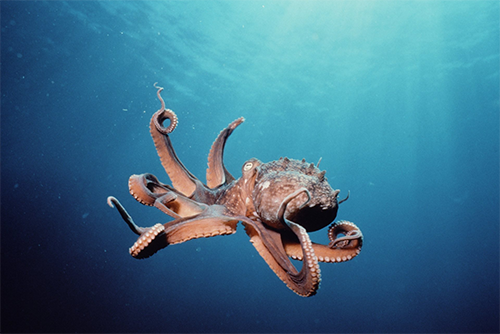

Bạch tuộc

Bạch tuộc là một loại sinh vật thân ngắn, mềm, hình ôvan, thuộc bộ Octopoda sống dưới đáy biển. Có khoảng 289 đến 300 loài bạch tuộc trên trái đất, chiếm hơn 1/3 tổng số động vật thân mềm.
Quay lại